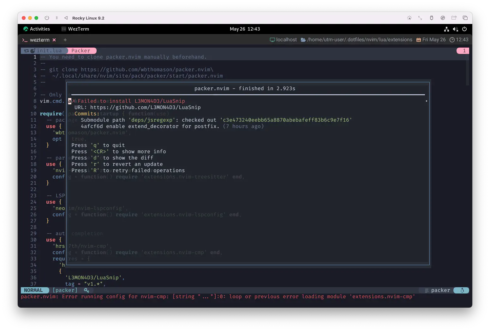

LuaSnip
前回はLSPを使用した補完が動いて大満足でしたね😊
今回はこれに加えて、スニペットによる鮮やかな華🌻 を添えていきましょう😽
LuaSnipの登場です❗
Parse LSP-Style Snippets either directly in lua, as a vscode package or a snipmate snippet collection.
LSP-Styleスニペットをluaで直接解析、vscodeパッケージ、snipmateスニペットコレクションとして解析します。
Expand LSP-Snippets with nvim-compe (or its' successor, nvim-cmp (requires cmp_luasnip))
nvim-compe (または後継の nvim-cmp (cmp_luasnip)) を使って LSP-Snippets を拡張します。
Wikipediaによれば、
スニペット(英語: snippet)とは、「断片」という意味で、 再利用可能なソースコード、マシンコード、またはテキストの小さな領域を表すプログラミング用語である。 通常、これらはより大きなプログラミングモジュールに組み込むために正式に定義された操作ユニットである。 スニペット管理は、一部のテキストエディタ、ソースコードエディタ、統合開発環境、および関連ソフトウェアの機能である。 これにより、ユーザーは日常の編集操作中に繰り返し入力する必要がなくなる。
...とのことです。
ぶっちゃけ「なんのこっちゃ」ですが、実際に動かして見てみれば至ってシンプルです 🐈
何よりも "繰り返し入力する必要がなくなる" という文言には魅力があります🤩
Mean Mister Mustard 1 sleeps in the park
Shaves in the dark trying to save paper
おケチなマスタードさん 公園でおねむだよ
暗がりでヒゲ剃り お金の節約
Requirements
jsregexpのインストールは環境によっては少し難しいです。
この後の項でも触れますが、わたしはどうしてもうまくいきませんでした😭
jsregexp
jsregexpについては以下の通りです。
これはtelescope.nvimの時と同じように、packerからmakeを使用してインストールできます😉
Install
と、いうことで一旦ここまでをインストールしてみましょう。
nvim-cmpのrequiresに追加してしまって差し支えないでしょう😌
use {
'hrsh7th/nvim-cmp',
config = function() require 'extensions.nvim-cmp' end,
requires = {
'hrsh7th/cmp-nvim-lsp',
+ {
+ 'L3MON4D3/LuaSnip',
+ tag = "v1.*",
+ run = 'make install_jsregexp',
+ }
},
}
tagはあってもなくても平気ですが、オフィシャルに「入れてね」と案内されています。
これはもう素直に入れておくべきですね❗
...わたしは入れずに使わせてもらってる "ひねくれ者" なんですけど😲
じゃあいつも通り、PackerSyncやPackerInstallを行なってみましょう...。
うまくいったかな❓
( In case of installation failure )
これもなんか決まり文句みたいになってるんですが、わたしの経験上macOSでは問題になったことがありません。
...ですが、このサイトで使用しているFedora系の環境ではjsregexpのインストールがうまくいきませんでした...😫
(ちょっと頑張ってはみたんですが😅)

ただ幸いにも、これはoptionalという位置付けなので必須ではありません。
If jsregexp is not available, transformations are replaced by a simple copy.
jsregexpが利用できない場合、変換は単純なコピーで置き換えられます。
なので、ひとまず安心してください😺
ただ、これだとpackerでアップデートを動かす度にmakeが走ってしまうので、runだけ外しておきましょう。
use {
'hrsh7th/nvim-cmp',
config = function() require 'extensions.nvim-cmp' end,
requires = {
'hrsh7th/cmp-nvim-lsp',
{
'L3MON4D3/LuaSnip',
tag = "v1.*",
- run = 'make install_jsregexp',
}
},
}
まあなんか、そんなこともあるよね〜❗ってことで😆
Add Snippets
スニペットのフォーマットにはいくつかあるみたいで、LuaSnipは以下のフォーマットに対応しています。
VS Code-like:
To use existing VS Code style snippets from a plugin (eg. rafamadriz/friendly-snippets) simply install the plugin and then add
(例えば rafamadriz/friendly-snippets) から 既存のVS Codeスタイルのスニペットを使用するには、プラグインをインストールし、次のように追加します。
require("luasnip.loaders.from_vscode").lazy_load()
SnipMate-like:
Very similar to VS Code packages; install a plugin that provides snippets and call the load-function:
VS Codeのパッケージと非常に似ており、スニペットを提供するプラグインをインストールし、load-functionを呼び出します：
require("luasnip.loaders.from_snipmate").lazy_load()
Lua:
Add the snippets by calling require("luasnip").add_snippets(filetype, snippets).
An example for this can be found here.
This can also be done much cleaner, with all the benefits that come with using a loader,
by using the loader for lua
require("luasnip").add_snippets(filetype, snippets)でスニペットを追加します。
この例はここで見ることができます。
また、ローダーを使うことで得られる利点はそのままに、
lua用のローダーを使うことで、より簡単に行うことができます。
わたしとしてはVS Code-likeの説明の中に出てきているFriendly Snippetsがおすすめなので、
これを使用できる状態を目標として進めていきます😉
Config
いつものようにluasnip.luaを作りましょう😺
そしてこれも、いつものように組み込みましょう😆
{
'L3MON4D3/LuaSnip',
tag = "v1.*",
run = 'make install_jsregexp',
+ config = function() require 'extensions.luasnip' end,
}
Keeps a ten-bob note up his nose
Such a mean old man
10シリングを鼻の穴に隠してる
なんてケチな爺さんだ
Keymaps
nvim-cmp's wiki also contains an example for setting up a super-tab-like mapping.
nvim-cmp の wiki には、super-tab のようなマッピングを設定する 例も紹介されています。
...と、いうことなので、これをnvim-cmp.luaのmappingに入れちゃいましょう😉
local cmp = require 'cmp'
local luasnip = require 'luasnip'
local map = cmp.mapping
local has_words_before = function()
local line, col = unpack(vim.api.nvim_win_get_cursor(0))
return col ~= 0 and vim.api.nvim_buf_get_lines(0, line - 1, line, true)[1]:sub(col, col):match '%s' == nil
end
cmp.setup {
mapping = map.preset.insert {
-- (中略)
['<Tab>'] = map(function(fallback)
if cmp.visible() then
cmp.select_next_item()
-- You could replace the expand_or_jumpable() calls with expand_or_locally_jumpable()
-- they way you will only jump inside the snippet region
elseif luasnip.expand_or_jumpable() then
luasnip.expand_or_jump()
elseif has_words_before() then
cmp.complete()
else
fallback()
end
end, { 'i', 's' }),
['<S-Tab>'] = map(function(fallback)
if cmp.visible() then
cmp.select_prev_item()
elseif luasnip.jumpable(-1) then
luasnip.jump(-1)
else
fallback()
end
end, { 'i', 's' }),
},
-- (中略)
}
super-tabについては実際に動作を見た方が感覚が掴めると思うので、
この先の 16.7.2. Friendly Snippets で簡単に補足します😉
His sister Pam works in a shop
She never stops, she's a go-getter
妹のパンはショップで働いてるよ
彼女は決して立ち止まらない、頑張り屋さんなんだ
I'll take you all.
結構色々組み込んできたんですが、まだ何も変化はありません。(なかなかハードですね...😅)
でもまあ、元気出していきましょう😆
Takes him out to look at the Queen 2
Only place that he's ever been
女王を見るために彼を連れ出すんだ
彼が今まで行ったことのある唯一の場所だよ
1: Mean Mister Mustard (by The Beatles): 本作は1968年頃に The Beatles のメンバーがインド・ऋषिकेश (リシケーシュ) で、 महर्षि महेश य ोगी (マハリシ・マヘーシュ・ヨーギー) のもとで瞑想修行を行っていた時期に書かれた楽曲で、 内容は Mustard というホームレスの男の日常を綴ったものとなっている。 歌詞のインスピレーションについて、Lennon は 「どこかでしみったれた男の新聞記事を読んだ。そいつは5ポンド札を鼻の中ではなく、別のどこかに隠していた」と語っている。 Wikipediaより
2: これはもちろんElizabeth II (エリザベス2世)のことですね。時代は変わる...。